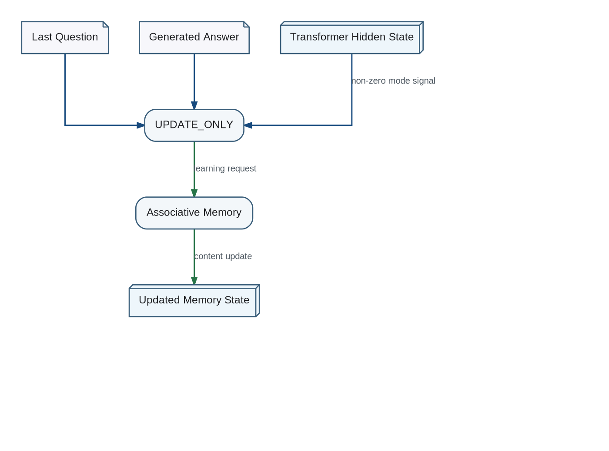

In a normal read cycle, an external utterance activates Associative Memory, which produces a Memory Vector used by the Transformer to generate a response.
Memory UPDATE Path

In an UPDATE_ONLY cycle, the last question, answer, and relevant Transformer hidden state are supplied to memory so that experience can be integrated without rerunning a full user-facing inference cycle.